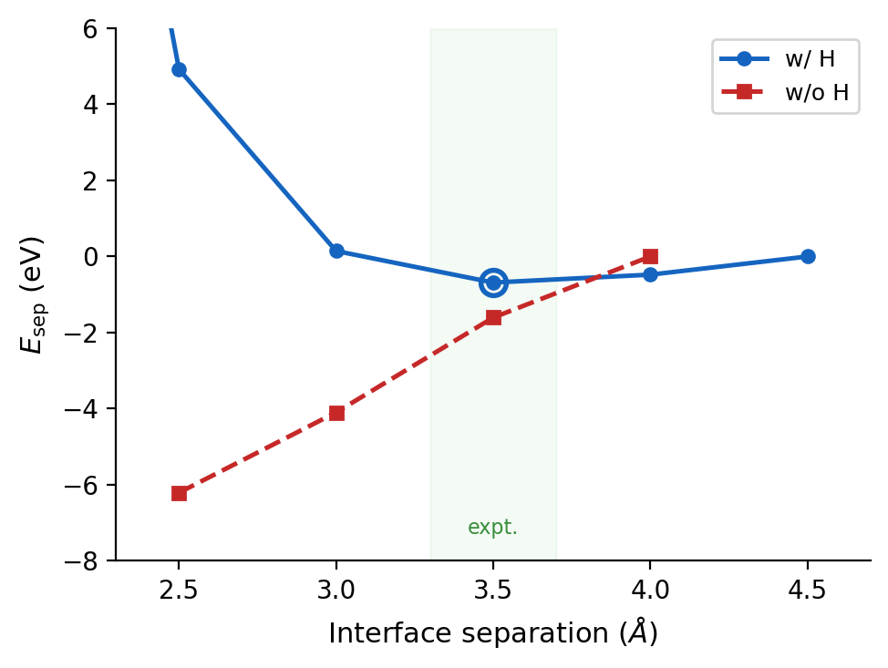

H termination of the VSe₃ interface: separation minimum restored
Goal
Test the hypothesis (proposed at the 2026-04-07 meeting) that the missing equilibrium in the bare VSe₃–Hf₂Se₉ separation curve is caused by dangling bonds on the cut VSe₃ interface Se. In the TP chain each Se bonds to two V (V–Se = 2.508 Å); cutting the chain removes one V, leaving an unsaturated bond that binds unphysically strongly to Hf₂Se₉. Hf₂Se₉ is closed-shell, so the problem is localized to the VSe₃ side. Verification: attach H to the VSe₃ interface Se and compare the separation-energy curve with the bare case.
Method
- H attached to the 3 interface Se on each side (6 H total), VSe₃ side only.
- H placed toward the missing-V direction (Se–H bond aligned with the original V–Se direction).
- d(Se–H) = 1.46 Å (H₂Se experimental r₀, NIST CCCBDB).
- Single-point scan d = 2.0, 2.5, 3.0, 3.5, 4.0, 4.5 Å.
- vdW-DF2 (LMKLL), MeshCutoff 500 Ry, k = 1×1×4, 44 atoms (6 V + 2 Hf + 30 Se + 6 H).
Here d is the z-distance between the VSe₃ terminal Se and the Hf₂Se₉ terminal Se.
Result
With H, a clear separation-energy minimum appears at d = 3.5 Å — matching the experimental ~3.5 Å. The bare structure keeps decreasing monotonically.
| d (Å) | Esep, with H (eV) | Esep, without H (eV) |
|---|---|---|
| 2.0 | +26.90 | — |
| 2.5 | +4.92 | −6.21 |
| 3.0 | +0.15 | −4.10 |
| 3.5 | −0.68 (min) | −1.61 |
| 4.0 | −0.48 | 0.00 |
| 4.5 | 0.00 (ref) | — |

scripts/plot_sep_energy.py.)H-orientation comparison (2026-04-16)
Three initial H directions were compared under the same conditions (vdW-DF2 single-point,
44 atoms, Se–H = 1.46 Å): bond (H toward the missing V center), gap
(H ⊥ Se₃ plane, i.e. pure ±z), and tilt (H tilted 45° radially outward).
gapis the most stable over the whole range; its minimum sits at d = 3.5–4.0 Å (the two points differ by ~4 meV).bondis 1.11 eV higher andtilt3.72 eV higher thangap.- Recommended relaxation starting structure:
gapmode, d = 3.5 Å.


Discussion
- H passivation removes the interface's unphysical strong binding: d < 3.0 Å rises steeply (Pauli repulsion / repulsive wall), d ≈ 3.5 Å balances vdW attraction and repulsion (equilibrium), d > 4.0 Å converges.
- This indicates the VSe₃ Se dangling bond was the main cause of the earlier separation failure.
- The H-direction choice is supported by MoS₂-edge literature (Bollinger 2003, Kronberg 2017, Lauritsen 2018): the chalcogen–H bond points along the dangling-bond direction, not toward the metal center; the ~1 eV mode spread is consistent with those studies.
Next steps (as stated)
- Finalize H direction (bond/gap/tilt comparison).
- Full relaxation at transport size (20uc).
- Hf₂Se₉ PDOS → band gap.
- TranSIESTA transport (electrode + device + I-V).